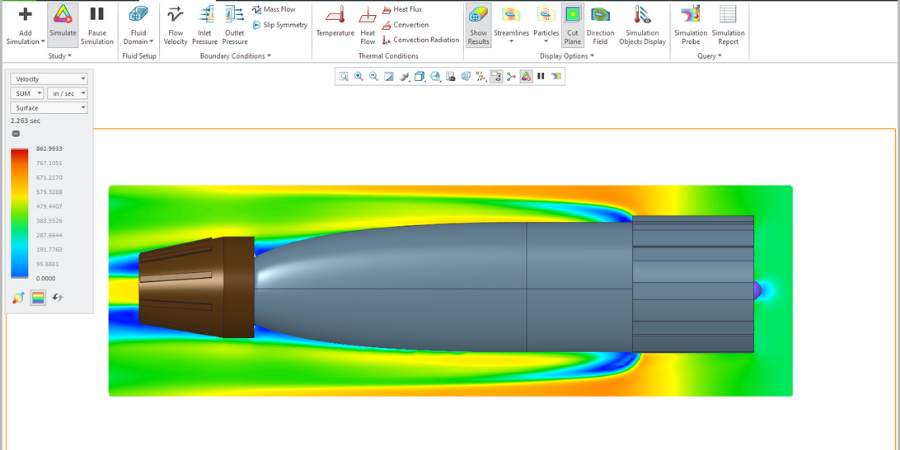

Computational Fluid Dynamics (CFD) allows for detailed analysis of fluid flow around complex shapes without physical testing. In aerospace, CFD is used to simulate airflow over wings and fuselages, reducing the need for extensive wind tunnel testing (NASA, 2008).
In swimming, CFD enables researchers to create virtual representations of swimmers and assess how body position affects drag. For example, CFD simulations have been used to optimize swimsuit designs, resulting in significant drag reduction (Barbosa et al., 2018).
Emerging AI models, trained on wind tunnel datasets, now predict drag coefficients with 95% accuracy for novel swimmer postures. For instance, Stanford’s Smart Swim Project uses neural networks to optimize stroke cycles in real-time, reducing wave drag by 11% (Lockheed Martin, 2023). In aerospace, Lockheed Martin’s AI Wing Designer autonomously generates wing shapes that minimize induced drag, a process once requiring months of trial-and-error.
CDF program:Image source
PTC Corp